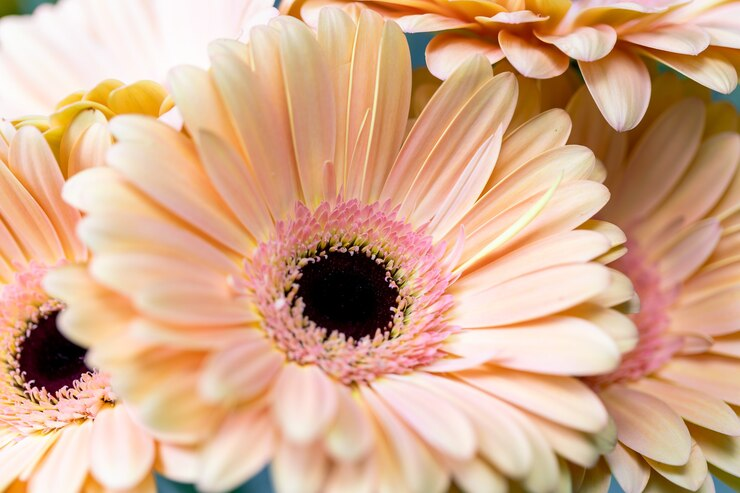

La flor es un corto tallo de crecimiento determinado que lleva hojas modificadas estructural y funcionalmente para realizar las funciones de producción de gametos y de protección de los mismos, denominadas antófilos. El tallo se caracteriza por un crecimiento indeterminado. En contraste, la flor muestra un crecimiento determinado, ya que su meristema apical cesa de dividirse mitóticamente después de que ha producido todos los antófilos o piezas florales. Las flores más especializadas tienen un período de crecimiento más breve y producen un eje más corto y un número más definido de piezas florales que las flores más primitivas. La disposición de los antófilos sobre el eje, la presencia o ausencia de una o más piezas florales, el tamaño, la pigmentación y la disposición relativa de las mismas son responsables de la existencia de una gran variedad de tipos de flores. Tal diversidad es particularmente importante en estudios filogenéticos y taxonómicos de las angiospermas. La interpretación evolutiva de los diferentes tipos de flores tiene en cuenta los aspectos de la adaptación de la estructura floral, particularmente aquellos relacionados con la polinización, dispersión del fruto y de la semilla y de la protección contra los predadores de las estructuras reproductivas.
